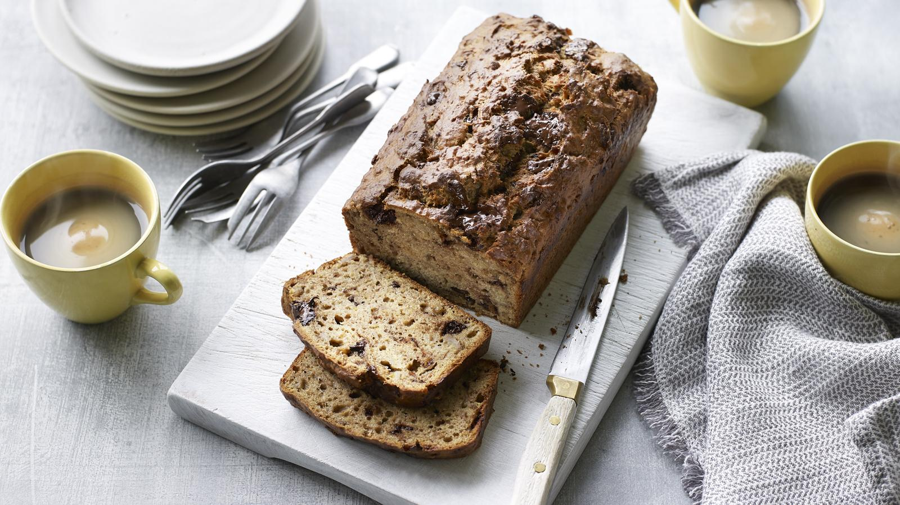

Coffee Banana Bread

Description
A recipe for Coffee Banana Bread yoinked from the BBC food pages.
Coffee Banana Bread
Ingredients
- 3 very ripe bananas, peeled and roughly chopped
- 110g/3¾oz caster sugar (or soft light or dark brown sugar)
- 2 free-range eggs, beaten
- 1 tbsp instant coffee, dissolved in small amount boiling water, or 1 espresso shot
- pinch nutmeg (or cinnamon or 1 tbsp finely chopped stem ginger)
- pinch salt
- 85g/3oz unsalted butter, melted, plus extra for greasing
- 225g/8oz self-raising flour (or use 225g/8oz plain flour and 1 tbsp baking powder)
- 100g/3½oz chocolate, broken into small pieces (optional)
Directions
- Preheat the oven to 190C/170C Fan/Gas 5 and grease a 1 litre/1¾ pint loaf tin (or similar-sized round or square cake tin)
- Mash the bananas in a bowl with the sugar, eggs, coffee, nutmeg and salt until everything is thoroughly combined. Stir in the butter, flour and chocolate, if using. Pour into the tin and bake for 50 minutes
- Remove from the oven and leave to cool slightly in the tin. Turn out onto a wire rack to cool completely and then serve in slices
Return